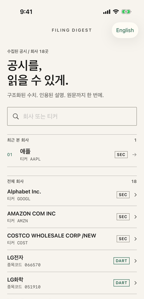
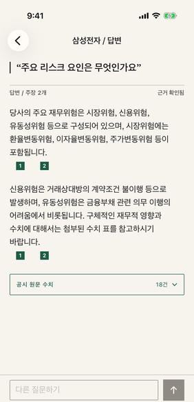
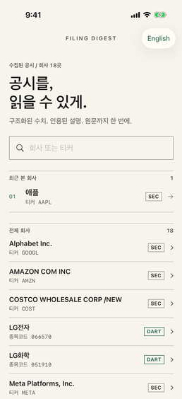
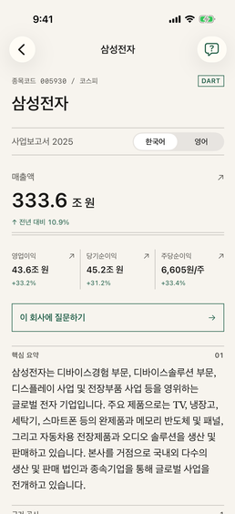
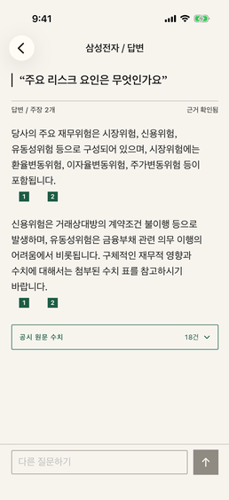
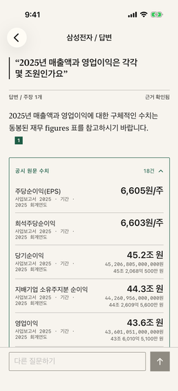
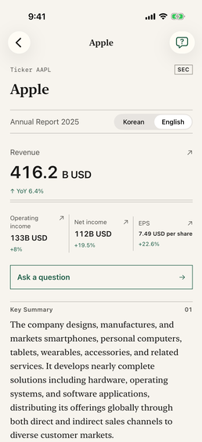
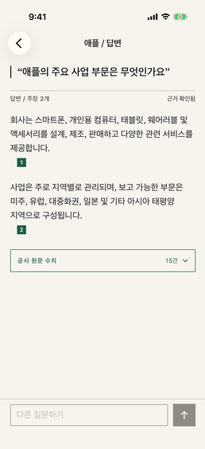
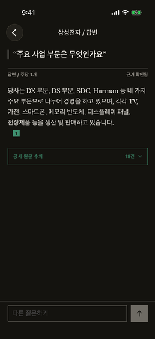

AUTHORITATIVE TRACK
Structured figures
DART and SEC facts remain exact, source-bearing values. They never pass through the language model.
- Exact decimal storage
- Reporting-period scope
- Openable filing source
READ-ONLY PORTFOLIO DEMO
Filing Digest turns Korean DART and US SEC filings into bilingual, source-linked iOS reading flows. Financial figures come from structured DART and SEC data; generated explanations link to filing excerpts.
This is a read-only portfolio demo built from captured app sessions. No live API calls, file uploads, or product analytics run on this page. Contact and privacy details
Captured October 3, 2026 with the current 18-company corpus. Gemini Flash-Lite wrote the explanations shown.

01 / PRODUCT WALKTHROUGH
The captured flow below exercises the product’s central promise: browse a bounded corpus, read structured facts, ask a question, and follow answer citations back to filing evidence.

Company coverage is visible before a question is asked.
Every metric links to the regulator filing that reported it.
Korean questions can retrieve evidence from US filings.
Claim markers resolve to bounded excerpts and openable filing sources.
IMPLEMENTED SURFACES







02 / EVIDENCE MODEL
Financial facts and generated narrative travel separately, then meet in the client only after deterministic checks have run.
AUTHORITATIVE TRACK
DART and SEC facts remain exact, source-bearing values. They never pass through the language model.
NARRATIVE TRACK
Retrieved filing chunks constrain generation. Missing or invalid evidence causes the prose to fail closed.
FILING FAMILY
Both apps tie every number to its filing. Digest reads a filing as a whole; Agent follows one number across years and companies.
READ · YOU ARE HERE
An iOS reader with bilingual filing summaries, source-linked figures, and Q&A that links answers to filing excerpts.
VERIFY
An investigation tool for following one reported figure across years and companies, back to the exact cell in the filing.
REPOSITORY EVIDENCE
Architecture decisions, evaluation harnesses, tests, and the full SwiftUI/FastAPI source live beside this demo.
For general or private questions, privacy questions, or deletion requests, email mj.apps.support@gmail.com. You do not need a GitHub account to email.
For public bug reports and feature requests, use GitHub Issues. Issues are public: do not include private information, passwords, or API keys.
This disclosure covers this recorded static walkthrough, which makes no live API calls and offers no file uploads or product analytics. It does not describe the local iOS app or backend.
Your language and theme choices are saved in this browser's storage. You can remove them by clearing this site's browser data.
GitHub Pages hosts this page. GitHub may process request data such as your IP address under the GitHub General Privacy Statement.
If you choose to contact support, your email address and message go through Gmail so the maintainer can respond. GitHub handles information you submit to Issues, where your report is public. Do not send passwords, API keys, or other credentials through either channel.